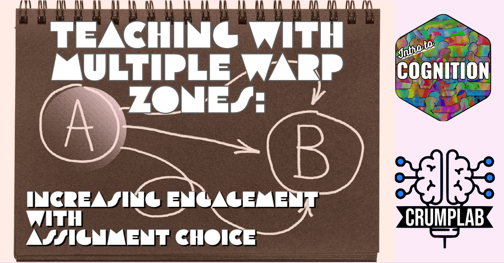

Writing an OER for teaching cognitive psychology: Project development notes
May 24th, 2022 - I’ve been writing an open-educational resource for teaching introductory cognition, and I’m makins some notes to self about where to take the project from here.
Last knit: 2022-11-10
Thanks to the CUNY OER initiative I received some funds to develop an open-educational resource for teaching introductory cognitive psychology. I got started in summer 2021, and have been adding bits and pieces ever since.
What’s done so far
There are lots of components to talk about, and I want to use this post to reflect on content development, rather than structure and tool development.
If you are unfamiliar with the suite, here’s a quick run down.
- Main website is here https://www.crumplab.com/cognition
- Textbook is here https://www.crumplab.com/cognition/textbook
- The website has learning modules for each week of the course. The learning modules contain textbook readings, slide decks, and optional assignments
- During Spring 2022, I made a whole bunch of mini-lectures that go with the slide decks and posted them on youtube. This is all part of the learning modules
- I have a test bank too
All of the source code for compiling these resources is shared in this github repository https://github.com/CrumpLab/cognition. I’m still working on developing a user guide, but see https://crumplab.com/cognition/articles/oer/oer.html.
What’s next: Chapters and Experiments
The textbook only goes to chapter 9. Ideally, any decent textbook would go to 11.
These are chapters I had plans to write, but didn’t finish yet.
- Implicit Cognition
- Computational modeling
- Categorization
- Attention and Working Memory
- Language and Semantic Cognition
- Judgment and Decision Making
- Thinking
It would also be good to include a chapter on perception, and perhaps another on emotion. I got burned out a bit writing the first 9 chapters over two months in summer 2021…still haven’t attempted to write another chapter since then. But that’s OK, it’s given me a bit of time to reflect on what I did, and what to do next.
I also have plans to embed working experiment demos into each chapter and/or learning module. Making experiment demos is higher on the priority list than writing new chapters for this coming summer, but we’ll see if I can’t turn out at least one or two.
Vision for the textbook
I considered involving a few colleagues to help with writing textbook chapters at the very beginning. And, thanks to all those who volunteered and talked with me about this project back then. Ultimately, I didn’t have enough cash to make it worth the effort, it was still a pandemic, and I didn’t have the bandwidth to coordinate anything. So, I thought I would take a swing.
The vision of the book is in the title “Instances of Cognition: Questions, Methods, Findings, Explanations, Applications, and Implications”. Looking at what is actually in the book, I think the title remains a promissory note. For example, I wanted to integrate instance theories of cognition throughout the book, but so far that didn’t happen. Nevertheless, that part does convey a more general theme that I do develop about the plethora of perspectives and approaches there are in cognition.
Before I wrote the textbook I was feeling irony towards myself. I don’t normally like textbooks, and I don’t usually teach cognition with a textbook. I usually develop course packs around primary journal articles, and assign those as readings. Now that I have some textbook chapters, I can assign those as readings too.
Opinion and modules
I thought it would be useful for the textbook to have a point-of-view that helped tie chapters together and resonate with recurring themes. I have my own opinions about the story of cognitive psychology, so I was hoping that this would provide recurring themes to tie chapters together. In hindsight, I need to develop these themes more explicitly, and then make sure they provide the glue I am looking for in the chapters.